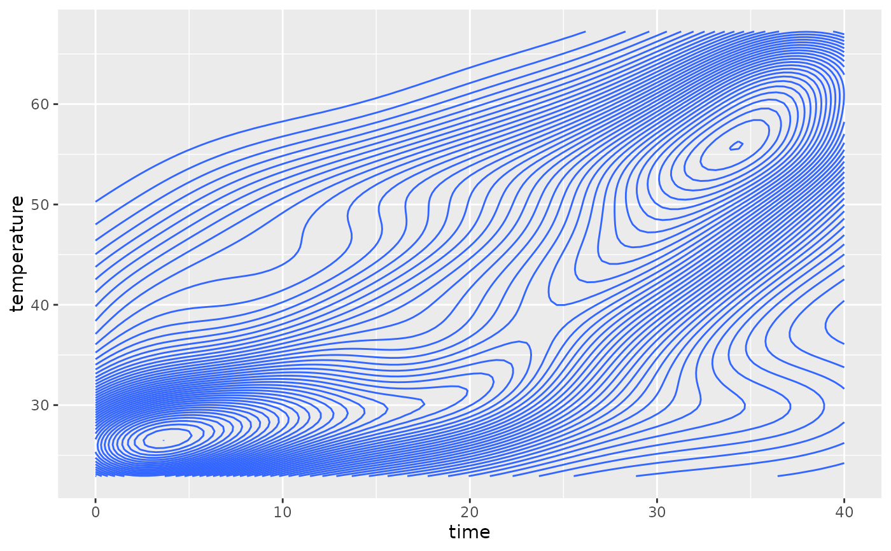
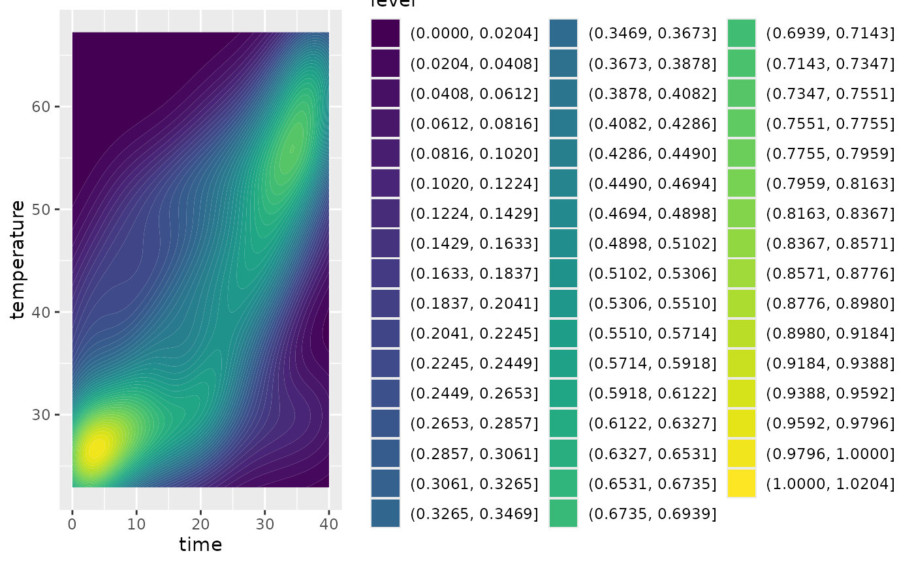
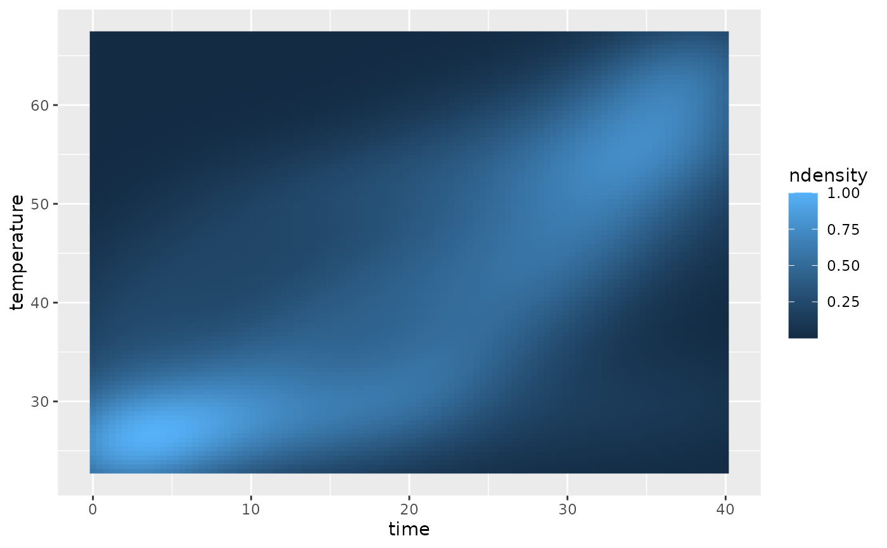
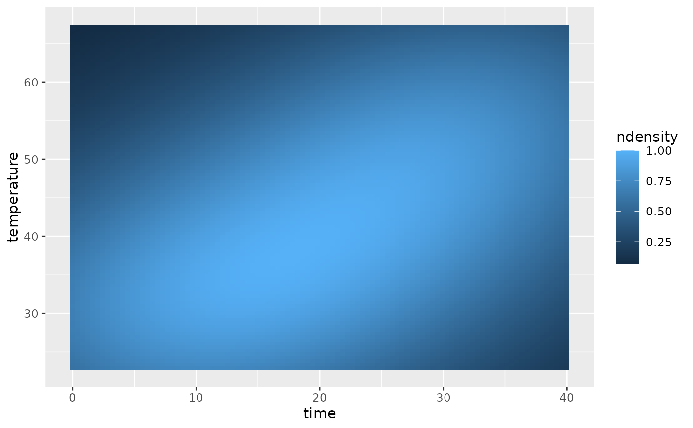

Creates a 2d kernel density estimate of the t-T paths and plots it using ggplot
Usage
plot_path_density_filled(
x,
bins = 50L,
densify = TRUE,
show.legend = NA,
geom = "density_2d_filled",
n = 100L,
...
)
plot_path_density(
x,
bins = 50L,
densify = TRUE,
show.legend = NA,
n = 100L,
...
)
plot_path_density_filled_weighted(
x,
bins = 50L,
densify = TRUE,
show.legend = NA,
n = 100L,
weights = NULL,
...
)Arguments
- x
either an object of class
"HeFTy"(output ofread_hefty()), adata.framecontaining thetime,temperaturecolumns of the modeled paths, or output ofdensify_paths().- bins
integer. Amount of bins used for the kernel density estimate. 50 by default.
- densify
logical. Whether the paths in
xshould be densified first? Default isTRUE.- show.legend
logical. Should this layer be included in the legends?
NA, the default, includes if any aesthetics are mapped.FALSEnever includes, andTRUEalways includes. It can also be a named logical vector to finely select the aesthetics to display.- geom
Use to override the default connection between
ggplot2::geom_density_2d()andggplot2::stat_density_2d(). For more information at overriding these connections, see how the stat and geom arguments work.- n
integer. Number of grid points in each direction.
- ...
Arguments passed on to
densify_paths()(only ifdensify=TRUE).- weights
numeric vector. Weights for each path segment.
See also
gof_weighting() for rescaling goodness-of-fit values to weights.
Examples
data(tT_paths)
plot_path_density(tT_paths)

plot_path_density_filled(tT_paths)

plot_path_density_filled(tT_paths, geom = "raster")

plot_path_density_filled_weighted(tT_paths, weights = gof_weighting(tT_paths$paths$Comp_GOF))
